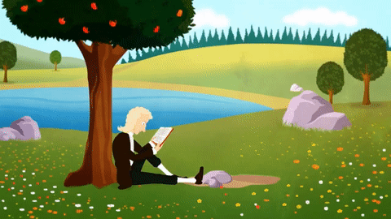
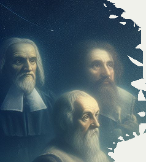
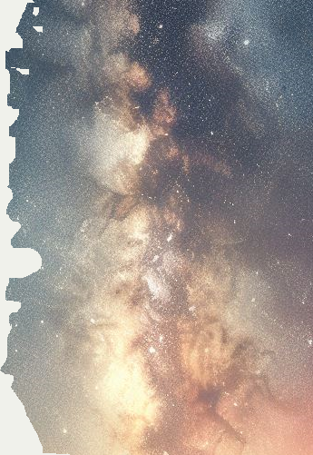
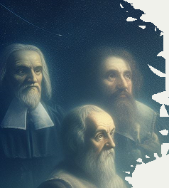
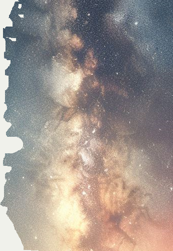

L’astronomie est l’une des plus anciennes sciences connues de l’humanité.
Les civilisations anciennes, telles que les Babyloniens, utilisaient l’astronomie pour suivre le temps et les saisons en observant les mouvements des planètes et des étoiles.
Au fil du temps, l’astronomie a évolué pour devenir une science complexe qui étudie les corps célestes et leur comportement dans l’univers.
L’étude de l’astronomie a permis aux scientifiques de découvrir des phénomènes tels que les trous noirs, les supernovas et les galaxies.
Aujourd’hui, l’astronomie continue d’être une science en constante évolution qui nous permet de mieux comprendre notre place dans l’univers.
https://astronomes.com/histoire-astronomie/
Préhistoire (3 cycles: journée, lune, année. La grotte de Lascaux)
La grotte de Lascaux, située dans la vallée de la Vézère en Dordogne, est l’une des plus importantes grottes ornées du Paléolithique supérieur
par le nombre et la qualité esthétique de ses peintures et gravures, principalement des représentations d’animaux.
Les peintures rupestres de Lascaux témoignent d’une longue tradition d’observation du ciel.
Les scientifiques ont découvert que les peintures rupestres représentent des constellations telles que le Taureau, Orion et les Pléiades.
Les hommes préhistoriques utilisaient probablement ces constellations pour suivre le temps et les saisons en observant les mouvements des étoiles.
C’est ensuite au Néolithique que de nouvelles preuves de l’intérêt de l’Homme pour l’étude du ciel apparaissent avec les mégalithes. Ces monuments constitués d’une ou plusieurs pierres de grande taille érigées sans mortier ni ciment auraient un rôle multiple : social et culturel, mais aussi astronomique.
La Mésopotamie
L'Egypte (Création de la journée de 24 heures)
https://www.bbc.com/afrique/articles/ce9klpz577vo
L'âge d'or de l'Islam
https://www.bbc.com/afrique/articles/ce9klpz577vo
Antiquité (Ptolémé, Hipparque, Erastothène, Thales de Millet)
https://fr.wikipedia.org/wiki/Histoire_de_l%27astronomie
Copernic
Tycho Brahé / Kepler
Galilé (lunette, vitesse de la lumière, procès) / Giordano Bruno

Newton (Télescope : lumière)
Casssini (observatoire de Paris) / Rohmel vitesse de la lumière
Calcul des longitudes, castastrophe navale anglaise
Halley, Hershell (Uranus, une comète?), Messier
Observatoire de Paris: Urbain Le Verrier Neptune
Observatoire de Paris: calcul de la vitesse de lalumière par Hypolite Fizaut
pour calculer la distance Terre / Soleil
=> finalement on fige le calcul pour déduire le mètre
Hubble expension de l'univers
Einstein théorie de la relitivité restreinte et générale
Georges Lemaître, théorie du Big Bang
Planck: fond diffues cosmologique?
Mayor: Exoplanète, Corot (détourné pour opportunité), Kepler, Trappist, Hubble, Tess, JWST
Equation de Drake interactive (on a pu affiner des termes)
 


